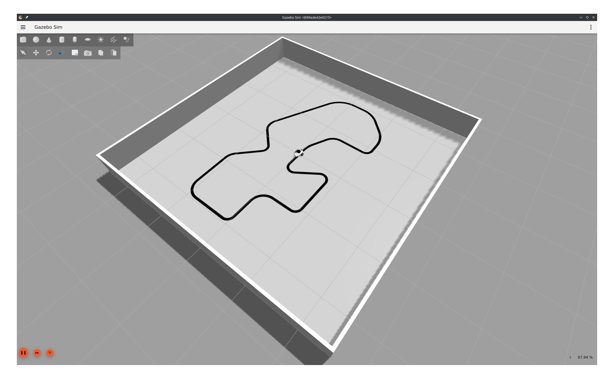
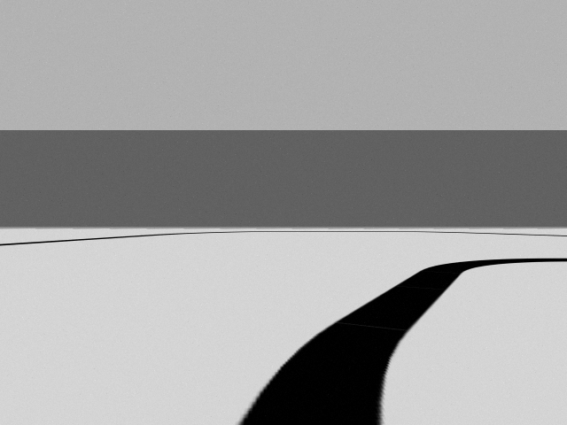
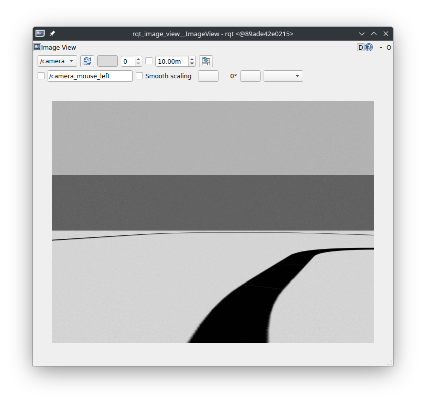
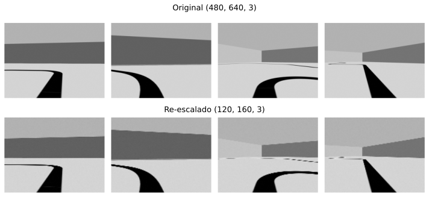
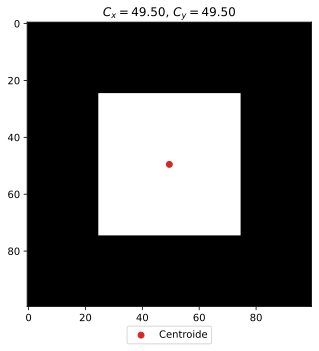
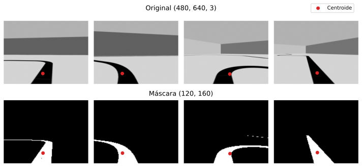
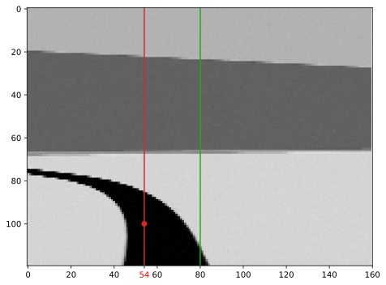
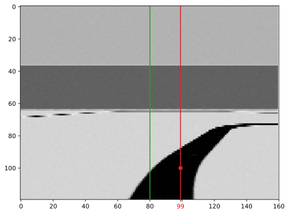

Robótica
Clase 15
Semana 19 - 03/09/2025
Caso práctico: Seguidor de línea
Objetivos
- Simular una cámara en Gazebo y obtener video desde ROS2
- Utilizar procesamiento de imágenes para detectar el camino
- Controlar el robot para seguir la pista

Desde la cámara:

Simulación de cámara
Sensor de referencia: Raspberry Pi Camera V2
Sensor model: Sony IMX219 - 8MPVideo modes: 1080p47, 1640x1232p41 and 640x480p206Depth of field: \(10 \mathrm{[cm]}\) to \(\infty\)Focal length: \(3.04 \mathrm{[mm]}\)Horizontal Field of View (FoV): \(62.2 \mathrm{°}\)Vertical Field of View (FoV): \(48.8 \mathrm{°}\)Size: \(25 \times 24 \times 9 \mathrm{[mm]}\)

Sistema de coordenadas
- Por lo general la dirección del eje \(\require{color} \textcolor{red}{\mathbf{x}}\) es de izquierda a derecha y la dirección del eje \(\require{color} \textcolor{green}{\mathbf{y}}\) de arriba hacia abajo
- Por regla de la mano derecha, el eje \(\require{color} \textcolor{blue}{\mathbf{z}}\) debe ir hacia adelante de la cámara

Sistema de coordenadas
- Para solucionarlo utilizamos dos marcos:
- uno para la cámara (con orientación ENU):
cam_link - otro que represente el marco óptico:
cam_optical_link
- uno para la cámara (con orientación ENU):
<link name="cam_optical_link"></link>
<joint name="cam_optical_joint" type="fixed">
<origin xyz="0 0 0" rpy="${-pi/2} 0 ${-pi/2}" />
<parent link="cam_link" />
<child link="cam_optical_link" />
</joint>Luego los headers de los mensages de Image y CameraInfo deben hacer referencia al cam_optical_link
Parámetros de la cámara
- Descripción del sensor: RPiCamV2
- Links:
cam_link,cam_optical_link - Fotogramas por segundo: 25
- Links:
sim_camera.xacro
<robot xmlns:xacro="http://www.ros.org/wiki/xacro">
<!-- .. -->
<gazebo reference="cam_link">
<sensor name="RPiCamV2" type="camera">
<always_on>1</always_on>
<update_rate>25</update_rate>
<visualize>true</visualize>
<topic>camera</topic>
<camera_camera_info_topic>camera_info</camera_camera_info_topic>
<optical_frame_id>cam_optical_link</optical_frame_id>
<camera name="IMX219">
<!-- Parámetros de la cámara -->
</camera>
</sensor>
</gazebo>
<!-- .. -->
</robot>Parámetros de la cámara
- Descripción de los parámetros de la cámara
- \(W = 640 \mathrm{px}\), \(H = 480 \mathrm{px}\)
- \(H_{FoV} = 62.2 \mathrm{°} \approx 1.085595 \mathrm{[rad]}\)
- \(V_{FoV} = 48.8 \mathrm{°} \approx 0.851721 \mathrm{[rad]}\)
- \(\texttt{fx} = \frac{W}{2 \cdot \tan(\frac{H_{FoV} \mathrm{[rad]}}{2})} \approx 530.47\)
- \(\texttt{fy} = \frac{H}{2 \cdot \tan(\frac{V_{FoV} \mathrm{[rad]}}{2})} \approx 529.08\)
- \(\texttt{cx} = \frac{W - 1}{2} = \frac{639}{2} = 319.5\)
- \(\texttt{cy} = \frac{H - 1}{2} = \frac{479}{2} = 239.5\)
sim_camera.xacro
<camera name="IMX219">
<horizontal_fov>1.085595</horizontal_fov>
<lens>
<intrinsics>
<fx>530.47</fx>
<fy>529.08</fy>
<cx>319.5</cx>
<cy>239.5</cy>
<s>0</s>
</intrinsics>
</lens>
<image> <!-- 640x480 mode -->
<width>640</width>
<height>480</height>
<format>R8G8B8</format>
</image>
<clip>
<near>0.01</near>
<far>25</far>
</clip>
<noise>
<type>gaussian</type>
<mean>0</mean>
<stddev>0.007</stddev>
</noise>
</camera>Plugin de sensores
- Para la simulación del sensor es necesario añadir en el
URDFel plugin deSensors
ros_gz_bridge
- Actualizar el launch
*.launch.py
- Actualizar el archivo de configuración:
Visualización de la imágen

rqt_image_view
Procesamiento mediante cv2
Etapas
- Captura
- Preprocesamiento
- Detección del camino
- Estimación del curso
0. Captura desde ROS2
Se utiliza el paquete
cv_bridgedevision_opencvpara convertir los mensajes de tipoImagede ROS2 al tipo de dato utilizado porcv2
- Dado el nodo
LineDetectorse crea elCvBridgey el subscriptor al topic/camera:
import rclpy
from rclpy.node import Node
from sensor_msgs.msg import Image
import cv_bridge
class LineDetector(Node):
def __init__(self):
# ..
self.bridge = cv_bridge.CvBridge()
self.sub = self.create_subscription(Image, 'camera', self.sub_callback, 10)
def sub_callback(self, msg: Image):
image = self.bridge.imgmsg_to_cv2(msg, desired_encoding='bgr8')
# ..0. Captura desde ROS2
Se utiliza el paquete
cv_bridgedevision_opencvpara convertir los mensajes de tipoImagede ROS2 al tipo de dato utilizado porcv2
1. Preprocesamiento
Disminuir la resolución para reducir la carga computacional y obtener mejor rendimiento
2. Detección del camino
Aplicar una máscara sobre la representación HSV
- Utilizando la representación HSV podemos utilizar la información del canal de
Valuepara detectar los píxeles de la línea - Representaciones HSV:
| Representación RGB | Representación HSV | |||||
|---|---|---|---|---|---|---|
| Red | Green | Blue | Hue | Sat. | Value | |
| rojo | 255 | 0 | 0 | 0° | 100% | 100% |
| verde | 0 | 255 | 0 | 120° | 100% | 100% |
| azul | 0 | 0 | 255 | 240° | 100% | 100% |
| blanco | 255 | 255 | 255 | - | 0% | 100% |
| negro | 0 | 0 | 0 | - | - | 0% |
2. Detección del camino
Usar la función
inRange(..)para construir la máscara
- Recibe como parámetros:
- Una imágen de 3 canales: \(I(x,y) = (H(x,y), S(x,y), V(x,y))\)
- El límite inferior: \(L = (H_{min}, S_{min}, V_{min})\)
- El límite superior: \(U = (H_{max}, S_{max}, V_{max})\)
- Devuelve:
- Una imágen de 1 canal \(M(x,y)\): \[ M(x,y) = \begin{cases} 255 \quad \textrm{si} \, \left| \begin{matrix} H_{min} \leq H(x,y) \leq H_{max} \\ S_{min} \leq S(x,y) \leq S_{max} \\ V_{min} \leq V(x,y) \leq V_{max} \\ \end{matrix} \right. \\ 0 \quad \textrm{en cualquier otro caso} \end{cases} \]
2. Detección del camino
Usar la función
inRange(..)para construir la máscara
- Ejemplo para el negro: H: (0-180°), S: (0-100%), V: (0-12%)
2. Detección del camino
Usar la función
inRange(..)para construir la máscara
- Aplicado a la imágen del camino:
3. Estimación del curso
Encontrar el centroide usando la función
moments(..)
- Recibe como parámetro:
- Una imágen con intensidad de píxel \(I(x,y)\)
- Devuelve:
- Momentos hasta de 3er orden:
\[ M_{pq} = \sum_x \sum_y x^p y^q I(x,y) \]
donde \(p\) y \(q\) son los índices del momento, el orden se define como \(p + q\)
3. Estimación del curso
Encontrar el centroide usando la función
moments(..)
- Momento de orden cero: \(p=0\) y \(q=0\)
\[ M_{00} = \sum_x \sum_y x^0 y^0 I(x,y) = \sum_x \sum_y (1) (1) I(x,y) = \sum_x \sum_y I(x,y) \]
En una imágen binaria, es equivalente a contar la cantidad de píxeles con valor 1
3. Estimación del curso
Encontrar el centroide usando la función
moments(..)
- Momentos de orden uno: \(\langle p=1, q=0 \rangle\) y \(\langle p=0, q=1 \rangle\)
\[ M_{10} = \sum_x \sum_y x^1 y^0 I(x,y) = \sum_x \sum_y x (1) I(x,y) = \sum_x \sum_y x I(x,y) \]
\[ M_{01} = \sum_x \sum_y x^0 y^1 I(x,y) = \sum_x \sum_y (1) y I(x,y) = \sum_x \sum_y y I(x,y) \]
En una imágen binaria, es equivalente a sumar las coordenadas \(x\) (para \(M_{10}\)) e \(y\) (para \(M_{01}\)) de píxeles con valor 1
3. Estimación del curso
Encontrar el centroide usando la función
moments(..)
- A partir de los momentos es posible calcular el centroide \((C_x, C_y)\):
\[ C_x = \frac{M_{10}}{M_{00}} \qquad C_y = \frac{M_{01}}{M_{00}} \]
3. Estimación del curso
Encontrar el centroide usando la función
moments(..)
Ejemplo numérico: Sea una imágen de \(100\times100\) píxeles negros, con un cuadrado de \(50\times50\) de píxeles blancos ubicados en el centro
Para todos los momentos solo se contalibilizaran los píxeles blancos, es decir, solo los píxeles \((x,y)\) tal que \(25 \leq x,y < 75\):
- Momento de orden cero:
\[ M_{00} = \sum_{x=25}^{74} \sum_{y=25}^{74} 1 = 50 \times 50 = 2500 \]
3. Estimación del curso
Encontrar el centroide usando la función
moments(..)
Ejemplo numérico: Sea una imágen de \(100\times100\) píxeles negros, con un cuadrado de \(50\times50\) de píxeles blancos ubicados en el centro
- Momento de orden 1: \(M_{10}\) (sumatoria en \(x\))
\[ M_{10} = \sum_{x=25}^{74} \sum_{y=25}^{74} x \]
para una coordenada \(x\) la sumatoria sobre \(y\), \(x\) se mantiene constante
\[ M_{10} = \sum_{x=25}^{74} (50 \cdot x) = 50 \cdot \sum_{x=25}^{74} x = 50 \cdot \frac{50 (25 + 74)}{2} = 50 \cdot 2475 = 123750 \]
3. Estimación del curso
Encontrar el centroide usando la función
moments(..)
Ejemplo numérico: Sea una imágen de \(100\times100\) píxeles negros, con un cuadrado de \(50\times50\) de píxeles blancos ubicados en el centro
- Momento de orden 1: \(M_{01}\) (sumatoria en \(y\)): Al ser simétrico el ejemplo, el valor es igual a \(M_{10}\)
\[ M_{01} = 50 \cdot \sum_{y=25}^{74} y = 50 \cdot 2475 = 123750 \]
3. Estimación del curso
Encontrar el centroide usando la función
moments(..)
Ejemplo numérico: Sea una imágen de \(100\times100\) píxeles negros, con un cuadrado de \(50\times50\) de píxeles blancos ubicados en el centro
\[ C_x = \frac{M_{10}}{M_{00}} = \frac{123750}{2500} = 49.5 \] \[ C_y = \frac{M_{01}}{M_{00}} = \frac{123750}{2500} = 49.5 \]

3. Estimación del curso
Encontrar el centroide usando la función
moments(..)
Otros ejemplos
3. Estimación del curso
Encontrar el centroide usando la función
moments(..)
Seguimiento de la pista
Utilizando la desviación horizontal del centroide respecto del centro podemos controlar el robot para mantener el curso
Sea el centro de la imagen \(W/2\) y \(e\) la diferencia con la coordenada \(x\) del centroide, \(c_x\): \[e = (W/2) - c_x\]
Si el centroide está a la izquierda: \[0 \leq c_x < W/2 \to 0 < e \leq W/2\]

Seguimiento de la pista
Utilizando la desviación horizontal del centroide respecto del centro podemos controlar el robot para mantener el curso
Sea el centro de la imagen \(W/2\) y \(e\) la diferencia con la coordenada \(x\) del centroide, \(c_x\): \[e = (W/2) - c_x\]
Si el centroide está a la derecha: \[W/2 < c_x \leq W \to -W/2 \leq e < 0\]

Seguimiento de la pista
Utilizando la desviación horizontal del centroide respecto del centro podemos controlar el robot para mantener el curso
- Sea el centro de la imagen \(W/2\) y \(e\) la diferencia con la coordenada \(x\) del centroide, \(c_x\): \[e = (W/2) - c_x\]
- Por lo tanto: \[ \left. \begin{alignat}{2} % c_x < W/2& \to -W/2 &&\leq e < 0 \\ 0 \leq c_x < W/2& \to \qquad 0 &&< e \leq W/2 \\ %c_x > W/2& \to \qquad 0 &&< e \geq W/2 W/2 < c_x \leq W& \to -W/2 &&\leq e < 0 \end{alignat}\right\} -W/2 \leq e \leq W/2 \]
Seguimiento de la pista
Comando de Twist
- Velocidad lineal: puede ser constante \(\to 0.25 \textrm{[m/s]}\)
- Velocidad angular: variable entre \(\to (-\dot\theta_{max},\dot\theta_{max}) \textrm{[rad/s]}\)
\[ \require{color} \dot\theta = \textcolor{Maroon}{\alpha} * \dot\theta_{max} \quad \textrm{con} \ \textcolor{Maroon}{\alpha} \in (-1, 1) \]
- Dividiendo \(e\) por \(W/2\) se puede acotar entre \((-1, 1)\):
\[ -W/2 \leq e \leq W/2 \ \to \ -1 \leq \frac{e}{W/2} \leq 1 \]
\[ \textcolor{Maroon}{\alpha} = \frac{e}{W/2} = \frac{(W/2) - c_x}{W/2} = 1 - \frac{c_x}{W/2} = 1 - \frac{2 * c_x}{W} \]
Ejemplo 1
Centroide a la izquierda
\[ \textcolor{Maroon}{\alpha} = 1 - \frac{2 c_x}{W} = 1 - \frac{2 * 54}{160} = 0.325 \]
\[ \begin{aligned} \dot\theta &= \textcolor{Maroon}{\alpha} * \theta_{max} \\ &= 0.325 * 1.0 \textrm{[rad/s]} \\ &= 0.325 \textrm{[rad/s]} \end{aligned} \]
- Comando:
Con velocidad angular positiva el robot girará hacia su izquierda ✅
Ejemplo 2
Centroide a la derecha
\[ \textcolor{Maroon}{\alpha} = 1 - \frac{2 c_x}{W} = 1 - \frac{2 * 99}{160} = -0.2375 \]
\[ \begin{aligned} \dot\theta &= \textcolor{Maroon}{\alpha} * \theta_{max} \\ &= -0.2375 * 1.0 \textrm{[rad/s]} \\ &= -0.2375 \textrm{[rad/s]} \end{aligned} \]
- Comando:
Con velocidad angular negativa el robot girará hacia su derecha ✅
Funciones auxiliares
Ver el procesamiento en tiempo real
- Se crea una ventana utilizando la función
namedWindowen el constructor del nodo
- Luego en el callback se puede mostrar el resultado
Demo

Laboratorio
Seguidor de lineas
Robótica - TUAR - FICH - UNL